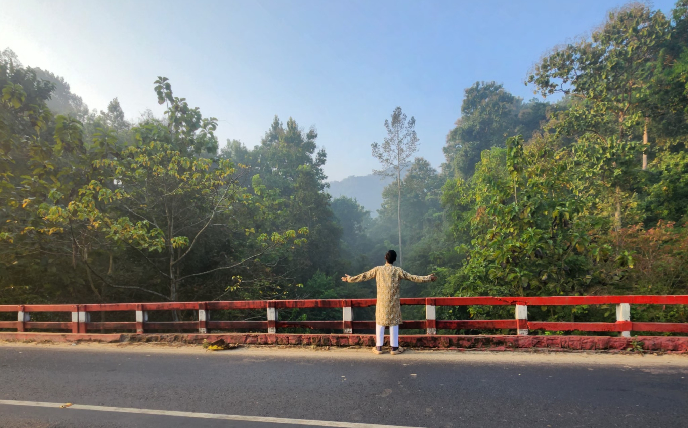
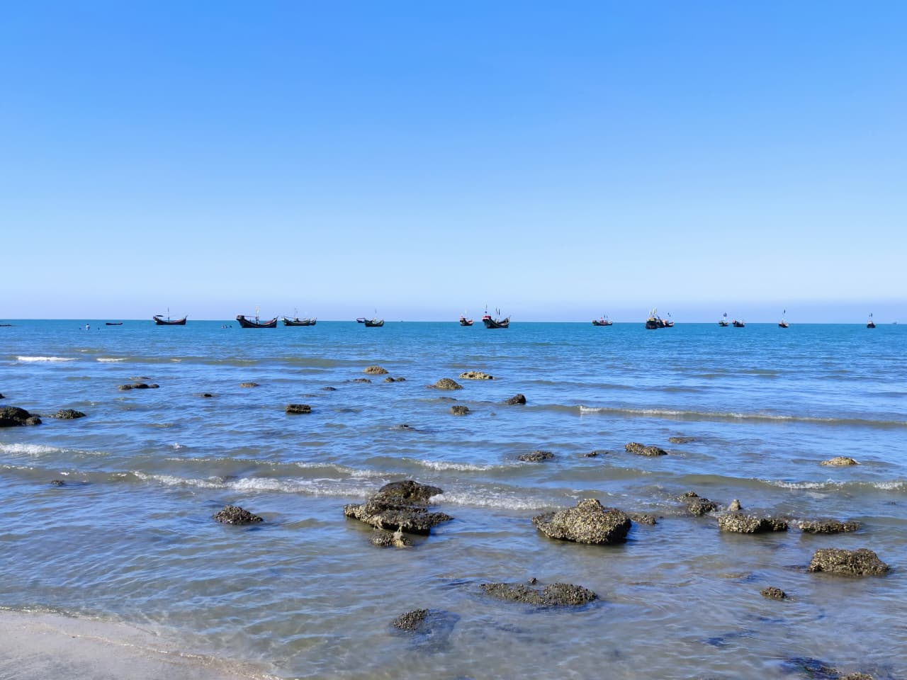
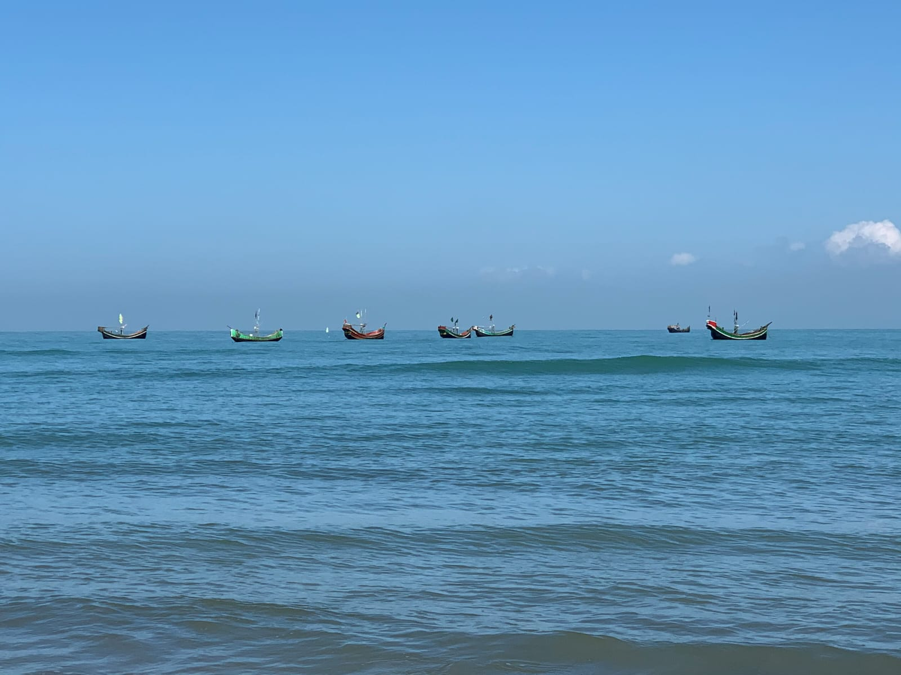
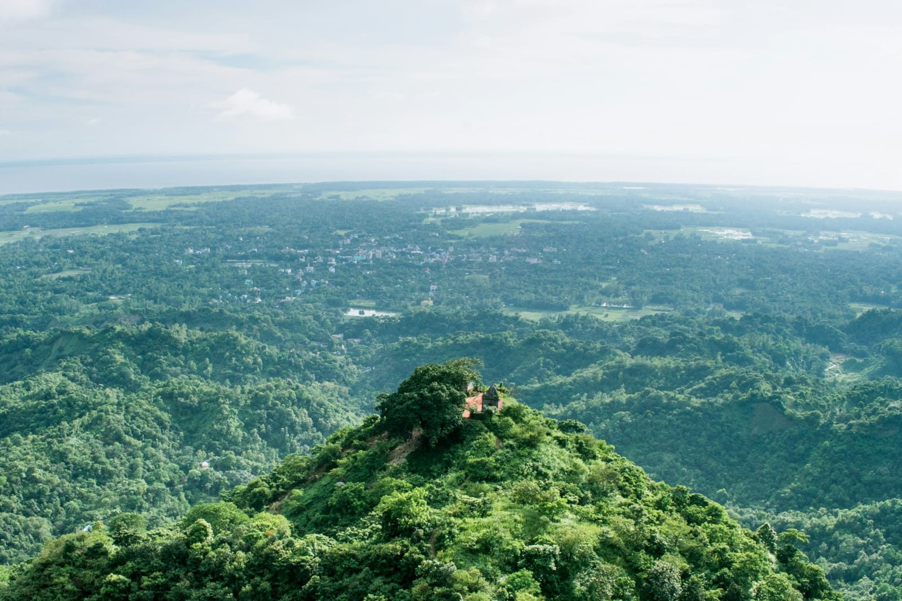

Heritage & History
Exploring historical places, monuments and the stories preserved within them.

A growing travel journal
Travel Filmmaker • Explorer • Storyteller
Discovering the world through places, people, history, culture and stories.
Who is ARHJ?
ARHJ Sardar Hojaifa is a travel explorer, filmmaker and storyteller from Bangladesh, driven by a curiosity to discover the diversity of the world. He is interested in places, history, heritage, culture, traditions, nature and the stories of the people who make each destination unique.
Through travel, photography and filmmaking, he wants to document his journeys and share the world from his perspective.
Read My StoryField notes
The subjects that keep pulling me toward another road, another place and another story.
Exploring historical places, monuments and the stories preserved within them.
Discovering the traditions, lifestyles, food and cultural identity of different communities.
Experiencing forests, rivers, coastlines, countryside and the natural diversity of the world.
Learning from the people, everyday lives and personal stories that make a place unique.
Finding stories in the journey itself—from roads and railways to boats, villages and unexpected places.
Featured Journey

Saint Martin's Island • Bangladesh
Reaching the island felt less like arriving at a destination and more like stepping into another world—one shaped by the sea, silence, people and the feeling of being very small before nature.
Read the StoryTravel writing
Saint Martin's Island
Sea, silence, island life and a journey that became more than a destination.
Read Story →
Cox's Bazar & Teknaf
A journey south through coast, hills, roads, communities and the edge of Bangladesh.
Read Story →
Sitakunda
A climb through hills, forest and silence, where the journey mattered as much as the view.
Read Story →A few answers
A travel explorer, filmmaker and storyteller from Bangladesh who is documenting a growing journey through places, people, culture, history and nature.
I travel to see the world beyond the familiar, experience different cultures and landscapes, discover history, and understand how people live in different places.
Historical places, heritage, local culture, nature, coastlines, hills, villages, cities and the everyday journeys that connect them.
Travel filmmaking and storytelling are part of the direction I am developing alongside photography and written travel stories.
I have travelled across a growing list of destinations in Bangladesh. You can see the places grouped by region on the Destinations page.
You can reach me by email or through the social links on the Contact page.